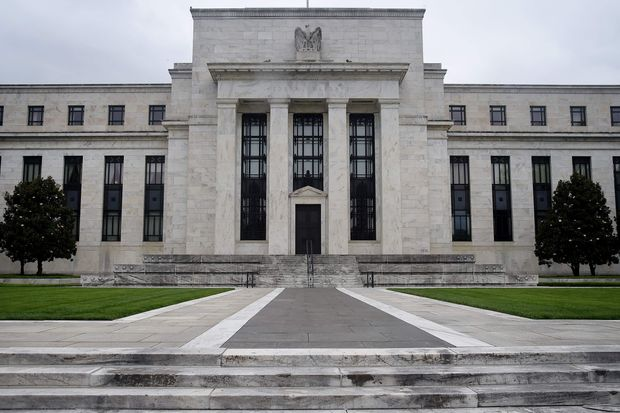
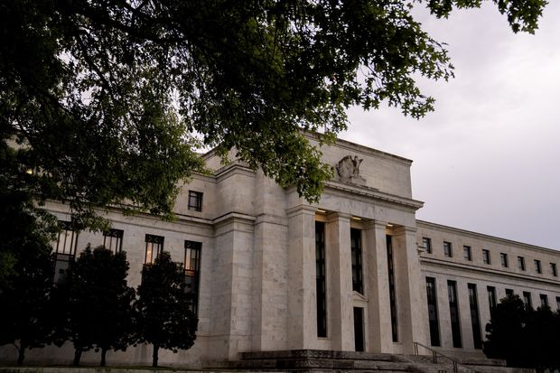
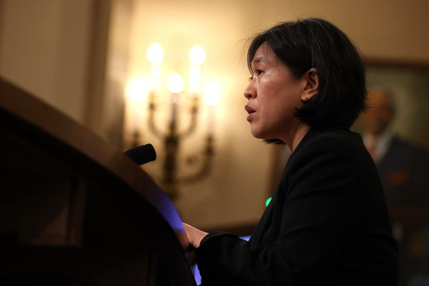
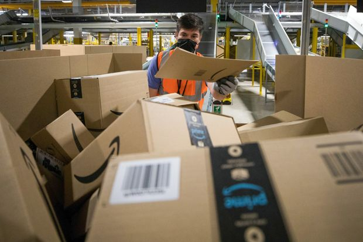
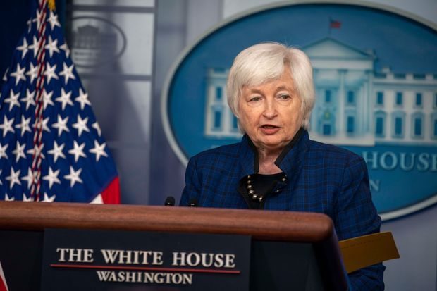
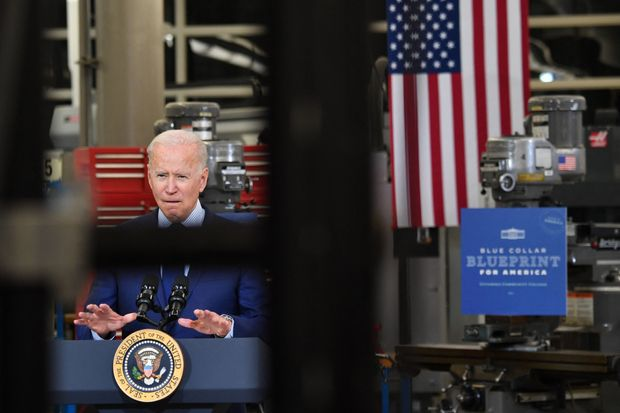

| 时间 | 分类 | 标题 | 副标题 | 正文 | 图片 |
|---|---|---|---|---|---|
| 2021-06-02 22:47:00 | U.S. | Pennsylvania Republicans Call for Election Audit Similar to Arizona’s | Controversy continues around re-check of ballots in Phoenix area, as Democratic Secretary of State announces candidacy for governor | PHOENIX—Pennsylvania GOP lawmakers visited an ongoing Republican-ordered audit of 2020 ballots here Wednesday and called for their state to conduct a similar review, the latest sign that political fighting over last year’s election is far from over. Republicans in Arizona’s senate ordered the audit of roughly 2.1 million ballots cast in Maricopa County, home to Phoenix, that began in April. President Biden won Arizona by just over 10,000 votes out of more than 3.3 million cast statewide, in part due to a roughly two-percentage-point victory in Maricopa. On Wednesday, three Republican state lawmakers from Pennsylvania toured the audit site, at the Veterans Memorial Coliseum in Phoenix, and met with several Arizona GOP lawmakers to discuss election issues, according to Arizona Republican state Sen. Wendy Rogers, who tweeted about the visit. Pennsylvania Republican Cris Dush, a freshman senator from the north central part of the state, said he would like to see his state undertake a similar audit of 2020 ballots, which supporters say is meant to provide transparency. “Forty-seven percent of the people in this country don’t have faith in the electoral—electoral integrity right now,” Mr. Dush said in an interview. “And my constituents are very much up in arms, with the lack of any movement on trying to find out what happened.” Pennsylvania state Sen. Doug Mastriano, a Republican, also called for Pennsylvania to conduct an audit, which he said could potentially focus on one county that leaned Republican and another that leaned Democratic. Mr. Biden won the state last year. “I’m not about overturning anything,” he said. “I’m just trying to find out what went right, what went wrong? And how do we have better elections in the future?” |
 |
| 2021-06-02 19:46:00 | Tech | Ransomware Scourge Continues as Essential Services Are Hit | Attacks on infrastructure are part of a global criminal pivot from stealing data to hobbling operations | Revelations of cyberattacks on transportation systems in New York and Massachusetts heightened concerns about the threat to U.S. businesses and essential services Wednesday, after hackers held hostage the world’s largest meat processor this week. An attack on JBS SA, the world’s biggest meat company by sales, upended U.S. meat supplies after it caused JBS’s plants to temporarily shut down. JBS said it restarted most of its plants on Wednesday, and that it anticipated operating at close to full capacity Thursday. White House officials said the hacking was likely carried out by a group based in Russia, and the Federal Bureau of Investigation attributed the attack to REvil, a criminal ransomware gang. On Wednesday, a ransomware attack disrupted ferry services in Massachusetts. New York’s Metropolitan Transportation Authority also revealed Wednesday that it had been hacked in April, although the attack didn’t disrupt operations, including the city’s subway system. In May, the operator of an essential pipeline bringing gasoline to parts of the East Coast paid about $4.4 million to regain control of its operations and restore service. San Diego-based Scripps Health said Tuesday that it is still recovering from a cyberattack it discovered on May 1 that disrupted its patient portal, electronic medical records, radiology and other systems and canceled or delayed appointments at its hospitals and clinics. |
 |
| 2021-06-02 19:25:00 | U.S. | Andrew Cuomo’s Office Has $2.5 Million Contract for Counsel in Federal Investigation | Records show the contract’s maximum amount has grown as probe into the Cuomo administration’s handling of Covid-19 deaths has expanded |  |
|
| 2021-06-02 18:57:00 | World | Netanyahu Rivals Agree to Form New Government to Oust Israeli Leader | Coalition led by Naftali Bennett and Yair Lapid will seek to resurrect an economy amid a fragile peace with Hamas | TEL AVIV—Israeli Prime Minister Benjamin Netanyahu’s rivals agreed to form a coalition government that would dislodge the country’s longest-serving leader, a major political shake-up as the nation seeks to protect a fragile truce with the Palestinian militant group Hamas. If the government is sworn in within the next two weeks, Mr. Netanyahu would cede power to the most diverse coalition in Israel’s history, including an independent Arab party for the first time. Yair Lapid, who leads the centrist Yesh Atid party, and Naftali Bennett, who heads the right-wing Yamina party, will team up with six other parties, including one of Israel’s Arab parties, Raam, according to a statement from Mr. Lapid. “The government will do everything it can to unite every part of Israeli society,” Mr. Lapid said late Wednesday. Mr. Lapid has informed Israel’s president of his government formation plan, the statement said. The parliament by law has about 12 days to swear in the government after Mr. Lapid notifies the president. |
|
| 2021-06-02 18:29:00 | U.S. | Prosecutors Seek 30 Years for Derek Chauvin in George Floyd Murder | Defense asks for reduced sentence or probation, while laying out arguments for ex-Minneapolis police officer’s retrial | Prosecutors on Wednesday said they are seeking a 30-year sentence for former Minneapolis police officer Derek Chauvin, convicted in April of the murder of George Floyd, while his defense attorney asked for less than the 15-year maximum in state sentencing guidelines or probation. Defense Attorney Eric Nelson also made his most extensive argument yet that Mr. Chauvin should be granted a retrial because of what he called prosecutorial and juror misconduct and errors by the judge, particularly in not granting a change of venue. Mr. Chauvin is expected to be sentenced June 25 after being found guilty in April of second-degree unintentional murder, third-degree murder and second-degree manslaughter after kneeling on Mr. Floyd’s neck and back for more than nine minutes, as he lay handcuffed in a prone position. Separately, Mr. Chauvin and three other former Minneapolis police officers were indicted by a federal grand jury in May on charges of violating Mr. Floyd’s constitutional rights. Hennepin County District Judge Peter Cahill last month found that the state had proved beyond a reasonable doubt that Mr. Chauvin had earned an aggravated sentence on grounds that he had abused his authority, had treated Mr. Floyd with particular cruelty, that children were present and that he had acted in concert with three other people. |
 |
| 2021-06-02 17:54:00 | Tech | SEC Is Running Out of Options to Rein In Elon Musk | Tesla CEO has resisted regulators’ demand for restraint in his public comments |  |
|
| 2021-06-02 17:47:00 | Opinion | AT&T’s Pipes Are Calling | Network operators should let go of the content creation dream and focus on content delivery. |  |
|
| 2021-06-02 17:46:00 | Opinion | Yes, It’s Still the Economy, Stupid | Swing voters dislike big spending. The GOP can’t focus only on the culture war. |  |
|
| 2021-06-02 17:45:00 | Opinion | A Wrestler Kowtows; a Musician Stands Up | John Cena grovels to China as Sean Lennon tweets up a politically incorrect storm. |  |
|
| 2021-06-02 17:44:00 | Opinion | Populists May Kill Chile’s Pension Success | The destruction of the Chicago Boys’ achievement has long been a goal of the left. |  |
|
| 2021-06-02 17:42:00 | Books | ‘The Secret Life of the Savoy’ Review: A Victorian Confection | The family that produced the Gilbert & Sullivan operas also ran the most modern, luxurious and talked-about hotel in London. |  |
|
| 2021-06-02 17:37:00 | CFO Journal | Frontier Communications Hires New CFO After Emerging From Chapter 11 | The company, which faces an FTC lawsuit, looks to expand its network of fiber-optic cables |  |
|
| 2021-06-02 17:30:00 | Economy | Fed to Sell Corporate Bonds and ETFs Acquired During Covid-19 Crisis | Central bank made purchases to shore up liquidity in debt markets after pandemic hit in early 2020 |  |
|
| 2021-06-02 17:25:00 | Opinion | Government Race Against a Cure | EU and U.S. trust busters try to stop a biotech merger in a market that doesn’t yet exist. | ||
| 2021-06-02 17:17:00 | Opinion | Work Free or Die in New Hampshire | The Granite State has a chance to join the ranks of right-to-work states. | ||
| 2021-06-02 17:15:00 | Opinion | What Did Fauci Tell Trump About Wuhan? | Newly disclosed emails about the possibility of a laboratory origin for the pandemic. | ||
| 2021-06-02 17:15:00 | Life & Arts | Mike Krzyzewski Plans to Retire as Duke Basketball Coach in 2022 | The legendary coach said that the next college basketball season will be his last before he’s replaced by coach-in-waiting Jon Scheyer |  |
|
| 2021-06-02 17:07:00 | World | Who Is Expected to Succeed Benjamin Netanyahu as Israel’s Prime Minister | What to know about Naftali Bennett, Yair Lapid and the new coalition | Israeli Prime Minister Benjamin Netanyahu’s rivals agreed to form a coalition government that would dislodge the country’s longest-serving leader with Naftali Bennett as his successor, a political shake-up that comes amid security and economic crises. Wednesday’s agreement is fragile and could still fall apart if some rightwing lawmakers are persuaded not to back the government when it comes up for a vote in parliament in the next 12 days. A cease-fire with Palestinian militant group Hamas remains fragile after 11 days of deadly fighting, the worst since the last of three wars in 2014. The new government will have to take steps to boost economic growth while keeping a check on the coronavirus pandemic. Israel is opening up again, after several lockdowns last year and one of the world’s fastest Covid-19 inoculation campaigns. The Biden administration is likely to see opportunity in a new leader amid lingering strains between Israel and many senior U.S. officials dating back to Mr. Netanyahu’s 2015 public campaign against the Iran nuclear deal. But the new government is also opposed to the Iran deal and isn’t expected to attempt any efforts toward resolving the Israeli-Palestinian conflict. |
|
| 2021-06-02 17:07:00 | Opinion | Biden’s Budget Signal to the Fed | His economists assume negative real interest rates for a decade. |  | |
| 2021-06-02 17:03:00 | Middle East | Bahrain, Facing a Covid Surge, Starts Giving Pfizer Boosters to Recipients of Chinese Vaccine | Residents who are over 50, are obese or have chronic illnesses are urged to get a Pfizer-BioNTech shot six months after their full Sinopharm vaccination | DUBAI—The Persian Gulf island nation of Bahrain, battling a sharp resurgence of Covid-19 despite high levels of inoculation with a Chinese-made vaccine, has started giving booster shots to vulnerable citizens using a different vaccine made by Pfizer Inc. and BioNTech SE, a senior official said. Waleed Khalifa al Manea, Bahrain’s undersecretary of health, said the vaccine manufactured by state-owned Chinese drugmaker Sinopharm, which has accounted for more than 60% of Bahrain’s inoculations so far, was providing a high degree of protection. More than 90% of people hospitalized in the current Covid-19 wave, the worst the country has faced, hadn’t been vaccinated, he said. Still, Dr. al Manea added, Bahrain residents who are over 50, are obese or have chronic illnesses now are being urged to get another shot six months after their full Sinopharm vaccination—with the Pfizer-BioNTech vaccine. The government started offering the boosters at the end of May, he said. Bahrain, which has made the Pfizer-BioNTech vaccine available to unvaccinated residents for months, will continue to offer the choice of Sinopharm to those who prefer the Chinese vaccine, Dr. al Manea said. The government’s BeAware app allows users to book a Sinopharm booster shot, but says that Pfizer-BioNTech is recommended for more-vulnerable population groups. Sinopharm and other Chinese vaccines have become key tools of Beijing’s international diplomacy, especially in developing nations unable to secure sufficient doses of U.S. and European-made shots. Sinopharm and another shot, manufactured by Sinovac Biotech Ltd., have already received emergency approval from the World Health Organization. |
|
| 2021-06-02 17:02:00 | Opinion | The Progressive Infrastructure Blacklist | Biden’s own advisory council says no to road and pipeline repairs. | ||
| 2021-06-02 16:53:00 | Business | Activist Likely to Gain Third Seat on Exxon Board | Hedge fund Engine No. 1 challenged Exxon’s strategy to focus on oil production amid climate-change concerns | An activist investor is likely to pick up a third seat on the board of Exxon Mobil Corp., giving it additional leverage to press the oil giant to address investor concerns about climate change. Exxon said Wednesday that an updated vote count showed shareholders backed a third nominee of Engine No. 1, an upstart hedge fund that had already won two board seats at Exxon’s annual shareholder meeting last week. The final vote hasn’t been certified, Exxon said, and could take days or weeks to be finalized, according to people familiar with the matter. “We look forward to working with all of our directors to build on the progress we’ve made to grow long-term shareholder value and succeed in a lower-carbon future,” Exxon Chief Executive Darren Woods said in a statement. “We thank all shareholders for their engagement and participation, and their ongoing support for our company.” Engine No. 1, which owns a tiny fraction of Exxon’s stock, had sought four seats on the board and argued the Texas oil giant should commit to carbon neutrality, effectively bringing its emissions to zero—both from the company and its products—by 2050, as some peers have. If the preliminary voting results hold, it will control a quarter of Exxon’s 12-person board. Last week, Mr. Woods was re-elected to the board along with seven of Exxon’s candidates, while the vote was too close to call for five nominees seeking the two remaining seats. |
|
| 2021-06-02 16:50:00 | Markets | You May Own AMC Stock After Its 2,850% Gain and Not Even Know It | GameStop and AMC remain part of the Russell 2000 value index despite a dazzling run-up in the shares | ||
| 2021-06-02 16:48:00 | World | Netanyahu Rivals Agree to Form New Government, to Oust Israeli Leader | Coalition led by Naftali Bennett and Yair Lapid will seek to resurrect an economy amid heightened tensions with Hamas | TEL AVIV—Israeli Prime Minister Benjamin Netanyahu’s rivals agreed to form a coalition government that would dislodge the country’s longest-serving leader, a major political shake-up as the nation seeks to protect a fragile truce with the Palestinian militant group Hamas. If the government is sworn in within the next two weeks, Mr. Netanyahu would cede power to a coalition made up of politicians from across the ideological spectrum. Yair Lapid, who leads the centrist Yesh Atid party, and Naftali Bennett, who heads the right-wing Yamina party, will team up with six other parties, including one of Israel’s Arab parties, Raam, according to a statement from Mr. Lapid. Mr. Lapid has informed Israel’s president of his government formation plan, the statement said. The deal comes days after Mr. Bennett made public his plans to join Mr. Lapid in a coalition. The parliament by law has about 12 days to swear in the government after Mr. Lapid notifies the president. Both leaders will take turns at leading the government, with Mr. Bennett serving first as prime minister for two years followed by Mr. Lapid, who will first serve as the foreign minister. |
|
| 2021-06-02 16:45:00 | CMO Today | Endeavor Ad Agency Invests in Shop Started by Michael B. Jordan and Nike Vet Chad Easterling | Obsidianworks was formed to help companies create more inclusive marketing, say its founders, one a Hollywood star and the other a prominent marketing executive | ||
| 2021-06-02 16:40:00 | Business | What Entrepreneurs Have Learned From the Covid-19 Pandemic | One key to staying afloat during a crisis: plan ahead | The pandemic has hit small businesses hard, with millions failing and countless others teetering on the edge of collapse. The survivors have learned hard lessons about keeping a company afloat through a crisis. Here’s a look at some advice that experts and entrepreneurs have taken away from the pandemic. Although we are still emerging from a crisis, use the time to prepare for the next one. Understand your existing hardware systems, your work flow and your employee structure. Discover where you have gaps and then build in redundancies to address them. “Look at all of the roles and tasks in your organization holistically. Create a chart of deliverables—everything that needs to get done to conduct your business and who does it,” says David Weiman, who heads executive coaching and leadership firm Weiman Consulting in Wynnewood, Pa. “It provides a transparent structure showing who does what job—and, more importantly, who can step in and overlap when a crisis happens again.” What’s more, an assessment “exposes the people who didn’t pull their weight and weren’t invested in the mission,” says Dr. Weiman. Some workers rose to the occasion in the pandemic—they helped others transition to working remotely, they were a backstop when smaller tasks or details were overshadowed by the bigger crisis, and they were an anchor for others as things fell apart around them. “It makes it easier to see and make decisions about existing personnel and new hires going forward,” Dr. Weiman says. |
|
| 2021-06-02 16:40:00 | Music Review | ‘Jubilee’ by Japanese Breakfast Review: Laughing and Crying at the Same Time | The singer-songwriter Michelle Zauner follows up her memoir, ‘Crying in H Mart,’ with an album that finds new levity among her usual somber topics. | ||
| 2021-06-02 16:37:00 | Opera Review | ‘Desert In’ Review: Opera Gets the Miniseries Treatment | Boston Lyric Opera teams up with television professionals on an inventive project set in a supernatural motel. | ||
| 2021-06-02 16:30:00 | Economy | U.S. Economic Activity Picked Up in Spring, Fed Beige Book Says | Businesses reported issues with supply constraints, worker shortages and higher prices | The U.S. economy continued to pick up speed in the spring, as consumers, many of them newly vaccinated and flush with federal stimulus cash, returned to restaurants, hotels and retail stores, the Federal Reserve said Wednesday. But businesses told the Fed that ongoing supply-chain disruptions and an acute labor shortage have made it difficult for them to meet demand and have caused them to raise prices. The Fed report, a collection of business anecdotes from around the county known as the Beige Book, said the economy grew at a moderate pace between early April and late May, “a somewhat faster rate than the prior reporting period.” Manufacturers and home builders reported that materials and workers were in short supply. Companies also struggled with delivery delays, the report said. Car dealerships said sales were strong but inventories tight, partly due to the global chip shortage. Transportation companies said they saw exceptionally strong demand. Prices rose more rapidly than earlier in the year, the Fed said, as businesses passed on rising material and freight prices to consumers. |
 |
| 2021-06-02 16:27:00 | Business | Developed Countries Lock Up Covid-19 Vaccines Through 2023 | Recent deals by EU, Canada and others come as developing nations clamor for doses, hardening a divide between rich and poor countries | The European Union, Canada and other developed countries have signed deals to get hundreds of millions of doses of Covid-19 vaccines and boosters over the next two years, furthering a divide between rich and poor countries. Under the recent deals, Pfizer Inc. and BioNTech SE agreed to supply the European Union up to 1.8 billion doses of their vaccine through 2023, while agreeing to supply Canada up to 125 million doses. Australia, Switzerland and Israel, meanwhile, are set to get Moderna Inc.’s shot through next year, and Switzerland has options for doses in 2023. The agreements will ensure the countries, including some that failed to lock up sufficient supplies of the mRNA vaccines earlier this year, have enough supplies to inoculate residents and protect them against potentially elusive variants, while providing a sales windfall to the manufacturers. Yet the deals once again leave out developing countries, many of which have fallen behind in vaccinating residents and struggled to contain the spread of the virus. |
|
| 2021-06-02 16:14:00 | Real Estate | Bedroom Design Ideas: Make it Chic, But Still Restful | Can a bedroom’s interior design be expressive and colorful but still soothing enough to ease you to sleep? Yes, and here’s how. | FIND THAT ONE thing that can serve as the inspiration for the color palette,” said Caitlin Murray, founder of Los Angeles’s Black Lacquer Design, when asked how to tackle a room’s décor. “It’s such an easy cheat.” In the case of a blandly modernized room in West Hollywood, the interior designer used an abstract painting as her jumping-off point. Guided by its mix of neutrals and pastels, she set about giving the bedroom enough character “for a lovely, spirited lady of a client” without over-energizing a space meant to be serene. Ms. Murray gave the artwork’s soft pinks and blues their boldest expression in the blush velvet-upholstered bed and the blocky dresser, from CFC furniture, whose color, though technically Slate, reads dusty indigo. Elsewhere, Ms. Murray deployed pattern in interesting ways. Pronouncing all-white ceilings and walls “so ‘Trading Spaces’ circa early 2000s,” she papered a single wall in inky cheetah speckles. A rug’s crazy quilt of browns is enlivened by a ribbed texture. “A lot of stuff can work as long as you stay within parameters,” said Ms. Murray of her focused formula. “I don’t like to introduce a color that isn’t found anywhere else, because it becomes an eyesore.” This dictum also applies to black. In this room, she used both the lamps and the throw to introduce bits of punctuating ebony. “You can’t have [black] in a vacuum,” she said. The result? A careful marriage of vivacity and quietude that may well lull one to sleep—but not out of boredom. |
|
| 2021-06-02 16:13:00 | Life & Arts | Kentucky Derby Winner Medina Spirit’s Positive Drug Test Is Confirmed | The first-place finisher in the Derby stands to be disqualified, while Churchill Downs has suspended trainer Bob Baffert for two years |  |
|
| 2021-06-02 16:00:00 | World | What Is Going on With Bird Flu? China Reports First Human Case of H10N3 Strain | Chinese health authorities said a man contracted a rare strain of the virus | Chinese health authorities said a 41-year-old man had contracted a rare strain of bird flu known as H10N3 and had been in the hospital since late April, calling it the first reported human case globally from the strain. The National Health Commission said the man developed a fever and other symptoms on April 23 and was admitted to hospital in Jiangsu province five days later. On Tuesday the health commission said his condition was stable and indicated he was ready to be discharged. The health commission didn’t give details on how the man came into contact with the virus. Cases of bird flu in humans have most commonly been reported among those in close daily contact with poultry, such as chicken farmers. The commission advised the public to avoid contact with sick and dead poultry. Avian influenza can be fatal in humans. Highly pathogenic strains, such as H5N1, can have a mortality rate of about 60%, according to the World Health Organization. However, the WHO says, bird flu doesn’t spread easily from birds to people. China has seen several outbreaks of bird flu, including one at the height of the coronavirus outbreak last year, when H5N1 avian influenza killed 4,500 chickens in central Hunan province, prompting authorities to cull another nearly 18,000 birds. In May, China’s Agriculture Ministry said the H5N8 strain of bird flu killed hundreds of wild birds in Tibet, prompting authorities to disinfect areas including a national wetland park. |
|
| 2021-06-02 15:59:00 | Business | Meat Supplies Tighten as Cyberattack on JBS Snarls Food Chain | Slaughterhouse outages are latest blow to industry facing higher costs, labor shortages | A ransomware attack against JBS SA sent shock waves throughout the U.S. food industry and exacerbated tension between Washington and Moscow, even as the meatpacker restarted plant operations. JBS said most of its plants would be operational Wednesday, and workers were told via social media to report to their normally scheduled shifts at meat facilities across the U.S. Some shifts and processing operations remained suspended, according to social-media posts. The White House, which said that JBS reported that the attack originated from a criminal group likely based in Russia, said President Biden plans to bring up the problem of ransomware during a summit with Russian President Vladimir Putin in Geneva on June 16. Asked at the White House on Wednesday whether he would retaliate against Russia over the cyberattack, Mr. Biden said: “We’re looking closely at that issue.” Russian officials didn’t immediately respond to a request for comment. The attack this week knocked out production at plants that process nearly a quarter of the beef and a fifth of the pork produced in the U.S., pushing up wholesale meat prices while complicating livestock deliveries from farms. |
|
| 2021-06-02 15:35:00 | U.S. | Memorial Day Will Likely Mark Covid-19 Pandemic Milestone | Public-health officials, epidemiologists predict vaccinations will keep new cases at bay | Memorial Day will be the first major test of the effectiveness of Covid-19 vaccinations in the U.S., according to many epidemiologists. Last year, reopenings in parts of the U.S. ahead of the holiday weekend led to a second surge of new coronavirus cases. Hospitalizations climbed in late June, followed by a steady rise in fatalities after the first week of July. This year, epidemiologists and public-health officials are hopeful that despite millions of Americans traveling for the weekend and the broad rollback of pandemic restrictions, newly reported Covid-19 cases, hospitalizations and deaths will remain low as more of the country continues to get vaccinated, albeit at lower rates. “We have seen after holiday weekends in the past that cases have risen, but we’ve never been in a position where we’ve had almost half the adults of America vaccinated and protected from this virus,” said Centers for Disease Control and Prevention Director Rochelle Walensky last week. Dr. Walensky nevertheless warned the virus remained dangerous for the unvaccinated. She encouraged those who hadn’t gotten a Covid-19 shot to do so and in the meantime continue wearing masks and practicing physical distancing. |
|
| 2021-06-02 15:34:00 | Screen Time | What to Watch: 10 Series and Movies to Stream This Week | Julianne Moore on Stephen King and ‘Lisey’s Story,’ the Australian series ‘Ms. Fisher’s Modern Murder Mysteries’ and other items to add to your queue. | ||
| 2021-06-02 15:27:00 | Opinion | We Need Mental-Health Services for Schools | Supporting students’ mental health is foundational to supporting their academic success, as well as promoting their healthy development. | ||
| 2021-06-02 15:25:00 | Opinion | Law and Order NYC: In Real Life, Not on TV | The cost, the crime and the constant feeling that there was a better way led to the move. | ||
| 2021-06-02 15:23:00 | Opinion | Hong Kong’s Security Law Stifles Dissenters | U.N. human-rights experts expressed concern that the National Security Law does not conform with the Universal Declaration of Human Rights | ||
| 2021-06-02 15:13:00 | Politics | U.S. to Levy Tariffs Over Digital-Service Tax, but Suspend Implementation | Levies won’t be imposed while U.S., other countries seek to negotiate a resolution | WASHINGTON—The U.S. said Wednesday it will impose tariffs on the U.K. and five other countries in response to their taxes on U.S. technology companies, but will suspend the levies for six months as it seeks to negotiate an international resolution. U.S. trade representative Katherine Tai said investigations determined that tariffs were justified because of digital-services taxes imposed on U.S. companies by the U.K., Austria, India, Italy, Spain and Turkey. She said the tariffs would be suspended while the U.S. focuses on finding “a multilateral solution to a range of key issues related to international taxation.” She said the U.S. is looking to resolve the issue through the Group of 20 economic powers and other international groups. The digital-services taxes affect companies such as Alphabet Inc . ’s Google and Facebook Inc. , and have been a flashpoint in the fight over which countries should have taxing rights over the world’s largest companies. |
 |
| 2021-06-02 14:53:00 | Markets | Profits May Not Be So Seamless for DoorDash, Uber Eats | DoorDash and Uber seem confident they can profit where Grubhub couldn’t, but the industry’s dynamics are little changed | ||
| 2021-06-02 14:42:00 | Pro Cyber News | Rise in Ransomware Requires Strong Government Response, Executives Say | Ransomware has become an intolerable situation in many nations, says FireEye CEO Kevin Mandia | ||
| 2021-06-02 14:03:00 | Fed’s Harker: It May Soon Be Time to Think About Tapering Bond-Buying | Philadelphia Fed president says when the time comes to pare asset-buying, it will be done ‘carefully and methodically’ as the economy strengthens | Federal Reserve Bank of Philadelphia leader Patrick Harker on Tuesday said he is getting ready to think about paring central bank stimulus as the economy continues to recover from the effects of the coronavirus pandemic. “We’re planning to keep the federal-funds rate low for long, but it may be time to at least think about thinking about tapering our $120 billion in monthly Treasury bond and mortgage-backed securities purchases,” Mr. Harker said in a virtual appearance Slowing... |
||
| 2021-06-02 14:00:00 | Business | Why Many Entrepreneurs Treat Their Businesses Like Their Children | When owners think about their businesses, their brain patterns are similar to the brain patterns of parents thinking about their children | It’s no secret that entrepreneurs think of startups as their babies. As it turns out, this may be more than just a metaphor. A study published in the Journal of Business Venturing in March 2019 looked at the brain patterns of 21 entrepreneurs and 21 parents who weren’t entrepreneurs. The goal was to investigate why and how company founders bond with their ventures. The result: When entrepreneurs think about their businesses, their brain patterns are very similar to the brain patterns of parents thinking about their children. Those findings shed light on why entrepreneurs run companies the way they do—and how they ought to. In the experiment, researchers used a technique called functional magnetic resonance imaging to see which parts of the participants’ brains were activated by a series of pictures. Entrepreneurs were shown photos of their business—such as the logo and product or service—as well as of other companies. The parents saw images of their own children, and other people’s. |
|
| 2021-06-02 13:38:00 | Tech | 10 Expert Ways to Get More Instagram Followers: A Summer Experiment | The surprising adventures of a social-media climber who grew his following by 20%—and what the pros say he did right and wrong | WHY WOULD ANYONEwant more Instagram followers?” sighed a friend two summers ago. “Mine just plague me with emojis in the comments.” With 8,000 fans, she could get 300 likes just by aiming her phone down and haphazardly photographing her feet. I’d attracted a mere 950 followers; none was blindly interested in photos of my limbs. This seemed problematic. As the editor of a newspaper’s lifestyle section when Instagram was increasingly defining lifestyle trends, I considered it a professional duty to conquer the platform and acquire enough followers to be plagued at least a little. Besides, I was feeling competitive. Mastering the science of growing my account became my summer project. To prepare, I watched dozens of YouTube videos in which platform pros talked very fast, outlining “tricks” and “secrets.” Here are the 10 strategies I considered or tested, driving my follower count up 20% in three months—along with updated commentary from two of those loquacious experts: The pros loudly concurred: To really grow your fan base, pick a single subject so your posts will reliably satisfy would-be followers with similar interests. Dogs. Saggy old houses. Exhaustingly elaborate desserts. “You need to offer one consistent value proposition,” said Ben Leavitt, a social-media guru in Guelph, Ontario, who’s created 53 YouTube videos drilling such principles into hopeful Instagrammers. But I just couldn’t do it. I resisted reducing myself to one dimension and didn’t have time to produce a steady stream of wearying tartlets. So I stuck with what Vancouver-based Instagram expert Vanessa Lau pityingly calls a “panoply” of topics. The only thing my posts have in common, she said after perusing my feed recently, is “really charming captions. Sell that in your Instagram profile bio.” That seems like an embarrassing “niche,” but Ms. Lau stars in 70 odd videos on Instagram success, one with 5.8 million views. This I did promptly. (Anyone can do so for free. Make the switch in “Edit Profile.”) “Professional” status lets you access “Insights,” metrics that track how many impressions your hashtags generated, how many shares or follows each post got. You can determine what’s working and try to do more of that. I quickly learned, beyond its paltry 37 likes, why my photo of a forgotten 1970s supermodel was a dud. It got no shares, even if her curly hair had (as I put it) “a matted, Little Orphan Annie intensity.” Said Ms. Lau diplomatically: Insights “let you optimize your strategy based on your findings.” “If you tell Instagram ‘I’m active on this account,’” said Ms. Lau, “it rewards you.” And potentially exposes your content to non-followers susceptible to your wiles. I obediently posted at 1 p.m., when my followers were most active, according to my Insights. Producing good photos daily nearly killed me, given that I spent my hours in a cubicle, not picturesque Fiji or a photogenic alternative circus. At one low point, I desperately snapped a giant iPhone projected on a giant screen in my slightly sci-fi newsroom. One charitable new follower proved susceptible. |
|
| 2021-06-02 13:13:00 | Opinion | Behind Your Long Wait for Packages | American ports aren’t productive enough to weather disruptions and increased demands. |  |
|
| 2021-06-02 13:12:00 | Opinion | A Different Kind of Labor Boss | Richard Brown wants to get California’s SEIU out of politics and negotiate more aggressively. | ||
| 2021-06-02 12:59:00 | Business | Amazon Prime Day Is Set for June 21-22 | Annual sales event will be final Prime Day with Jeff Bezos as CEO | Amazon.com Inc. said it would hold its Prime Day on June 21 and 22 in the U.S. and other countries, returning the annual sales event to midyear after the pandemic altered its timing last year. The event this year is scheduled a bit earlier than the normal July date, which aims to capitalize on a seasonal shopping lull with sales on millions of items. Other retailers have in past years held competing events near Prime Day with deals to attract shoppers. Walmart Inc. on Wednesday said it plans to hold a sales event called “Deals for Days” from June 20 to 23 featuring items in stores and online. This year’s Prime Day comes just before Amazon founder Jeff Bezos plans to step down as chief executive. Andy Jassy, head of Amazon’s cloud computing business, is set to assume the CEO role on July 5, while Mr. Bezos becomes executive chairman. Amazon held last year’s shopping fest in October as the Covid-19 pandemic and a rise in online shopping during lockdowns strained delivery networks and caused delays earlier in the year. The later event provided a jump-start to the holiday shopping season and fueled record quarterly sales for the online retailing giant. Neil Saunders, managing director of GlobalData Retail, said that having Prime Day return to an earlier date is good for the industry as a whole. Having it in the fall last year “added a lot of pressure to delivery and fulfillment operations that were already under stress as the holiday approached,” he said. |
 |
| 2021-06-02 12:17:00 | Markets | Elliott Management Holds Big Dropbox Stake | Activist hedge fund is largest shareholder in software company after CEO Drew Houston | ||
| 2021-06-02 12:06:00 | Tech | Essential Tailgating Gear to Get You Back to the Stands in Style | From space-age lawn chairs to chargers that can power a mini fridge, our recommendations will make your 2021 setup the envy of your face-painted neighbors | WHEN CHEZ CHESAK goes back to tailgating this year, he’ll have plenty of company. A New England Patriots fan who’s now living in Cincinnati, the 51-year-old belongs to an “expat” club that already has more than 100 Patriots zealots signed up to travel to Indianapolis this football season when their team plays the Colts. “I miss the camaraderie, energy and excitement,” said Mr. Chesak. Tailgating gear has improved tremendously since you, too, last partied in a parking lot with friends, family and face-painted strangers. So think about what you’re packing before you storm the asphalt, making up for lost time. From coolers that double as on-the-go kitchens to energizing speakers and portable chargers that can power all of your devices, we found the gear to ensure this year’s festivities are worth the wait. This modern lawn chair retains the best traits of the classics—woven webbing, easy setup—but adds handsome beech wood armrests and a detachable cooler underneath to keep drinks and snacks handy. An aircraft-grade aluminum frame means the chair is light enough to wear as a backpack (with straps), yet strong enough to support a 350-pound fan. Our favorite feature is the height: Unlike many camp chairs whose undersides practically scrape the ground, the Voyager sits higher to make getting in and out easier. ($220, parkitmovement.com) Once you’re inside the stadium, these Nikon binoculars will let you read the catcher’s signs from the nosebleeds. A top-mounted lever makes for easy switching between four zoom distances with your index finger, while coated optics brighten the view. It weighs less than a bottled water, so you won’t strain your neck during the seventh-inning stretch. ($150, nikonusa.com) Your smart speaker from home won’t do in a WiFi-less stadium parking lot. Instead, opt for JBL’s new, thermos-size speaker with Bluetooth connectivity, great sound and a 20-hour battery life per charge. The Charge 5 is waterproof in case of spilled suds, and, should it tumble off a table, its rugged housing will ensure it hits the asphalt intact. ($180, jbl.com) |
|
| 2021-06-02 12:00:00 | Business | CEO? Entrepreneur? Scientist? The Title You Choose Sends a Message | Startup founders should think carefully before choosing, because some titles suggest competence, while others suggest warmth | Choosing your own job title is one of the freedoms of being an entrepreneur. But be careful—the title you choose can make a difference in how you’re perceived. That is according to research published in the Journal of Business Venturing Insights from University College London academics James Berry and Janice Sanchez. The authors discovered that founders who use the title “entrepreneur” are seen as less competent than founders who call themselves “CEO” or “scientist.” On the other hand, those who dub themselves entrepreneurs are seen as “warmer” than others—good-natured, sincere and trustworthy. That means that business owners should think carefully about which title they use in which context, say the authors of the study, which surveyed 286 people to determine societal perceptions of four different titles—entrepreneur, scientist, advertiser and CEO—in terms of competence and warmth. “Remember that when you’re shaking somebody’s hand, what you say doesn’t have to mirror what’s written on your business card,” Dr. Berry says. |
|
| 2021-06-02 11:52:00 | Deals | Stack Overflow Sold to Tech Giant Prosus for $1.8 Billion | Deal is Prosus’ biggest investment in online learning and comes weeks after it sold a chunk from its massive Tencent holding | ||
| 2021-06-02 11:41:00 | Life & Arts | Traveling to Europe? Here’s What’s Open to U.S. Tourists | The Eiffel Tower re-opens next month, the Louvre already welcomes visitors—but you need to book a spot. For U.S. travelers planning a summer vacation in Europe, here’s what to do in six countries. | ||
| 2021-06-02 11:27:00 | Television | Why Judge Judy Is Taking Her Gavel From Broadcast TV to Streaming | Judy Sheindlin, star of the juggernaut daytime series, explains why she left broadcast syndication for Amazon-owned IMDb TV | Naples, Fla. The last case she taped for “Judge Judy” didn’t deviate in style from the roughly 12,750 cases before it. Wearing a black robe, lace collar and expression of intense focus, Judy Sheindlin heard a typical dispute—contractor suing for payment, client claiming shoddy work—which she dispatched with signature jabs like “That’s baloney” and “Don’t waste my time.” The judge gave no farewell remarks from the bench. When the episode airs June 8—others taped earlier will air later—only one detail will make it stand out among reruns for years to come: a glittery, bee-shaped clip Ms. Sheindlin wore in her hair. It was a wink to fans, and a nod to her Queen Bee production company at the end of a 25-year reign over daytime television. Ms. Sheindlin has been an unwavering force in an industry where names like Oprah made more splash. “Judge Judy,” the No. 1 first-run show in syndicated TV for 11 consecutive seasons, looks on track to end with a 12th, with an average 7.8 million viewers. The broadcast landscape, dictated by the rhythms of talk shows, doctor shows and court shows leading up to the local news, is in flux as audiences break with old routines and studios sell more programs to streaming platforms. At age 78, Ms. Sheindlin is headed for streaming, too, instead of retirement. Next on her docket: a new court show that will premiere on Amazon ’s free, ad-supported streaming service, IMDb TV, later this year. |
|
| 2021-06-02 10:59:00 | Economy | Latin America Leads Revolt Against Free-Market Growth Model | Voters in Peru could elect Pedro Castillo, leader of a Marxist party, as president as region deals with economic and Covid-19 crises | Latin America, which led developing nations in adopting a market-friendly model of economic development, may now be leading them away from it. On Sunday, voters in Peru could elect as president Pedro Castillo, leader of a Marxist party that seeks to nationalize foreign-owned mines, invokes Lenin and Fidel Castro, and questions democratic institutions such as a free press. On the same day, Mexicans will decide how much control over Congress to give their leftist president, Andrés Manuel López Obrador. Since taking office in 2018, he has expanded state control of oil, gas and electricity while undercutting the independence of the judiciary. And just weeks ago, Chileans elected a far-left slate of delegates to rewrite their constitution. A leftist already governs Argentina and polls suggest one could win Brazil’s presidential election next year. While Latin America is no stranger to economic and political turmoil, the circumstances this time are quite different. The collapsing currencies, runaway government debt and hyperinflation that regularly plunged the region into devastating crises are largely absent (Venezuela and Argentina excepted). For that, thank the “Washington consensus,” a suite of policies including keeping budgets and inflation under control championed by the region’s finance ministers and central bankers, many trained at U.S. schools. And yet in the past decade Latin America failed to achieve what mattered most: durable economic growth. Even before Covid-19, the region was stagnating. Per capita gross domestic product, adjusted for inflation and currency purchasing power, was the same in 2019 as in 2011. In that time China’s grew 66%, India’s 52%. Covid-19 knocked Latin American per capita incomes back another 8%, the International Monetary Fund estimates. Latin America still lags behind in part because its rates of saving and investment remain far below Asia’s, and because of its dependence on commodities, which boomed on the back of Chinese demand, then went bust. |
|
| 2021-06-02 10:59:00 | Life & Arts | Will Ties Ever Be Relevant Again? | Neckwear was on the decline long before WFH Zoom shirts made menswear even more casual. We explore whether the accessory can regain its relevance in post-lockdown life. | ||
| 2021-06-02 09:56:00 | World | Iran’s Largest Navy Ship Sinks After Catching Fire in Gulf of Oman | Sinking of the Kharg, Iran’s largest navy ship, comes after a string of fires and explosions at key security sites | Iran’s largest navy ship sank early Wednesday in the Gulf of Oman after catching fire, according to Iranian state media, the latest blow to the country’s vital infrastructure and military assets in recent months. The Kharg had been deployed to international waters to participate in a training exercise when it caught fire near the port of Jask, the semiofficial Tasnim news agency said. The fire had started in the engine room, causing parts of the ship to melt and fall into the sea, state news agency IRNA said. Rescue workers tried for 20 hours to extinguish the fire but couldn’t prevent it from spreading, Tasnim said, citing Iran’s navy, which added that all of the nearly 400 crewmembers were evacuated safely from the ship. Other Iranian media outlets broadcast footage from the Gulf of Oman of what they said was the ship burning in the distance. Neither outlet reported details of the cause of the fire. The government didn’t immediately respond to a request for comment. |
|
| 2021-06-02 09:36:00 | Markets | What Is Dogecoin, How to Say It, and Why It’s No Longer a Joke | Cryptocurrency recently got a new lease of life |  |
|
| 2021-06-02 09:05:00 | Business | Tyson Replaces CEO Dean Banks After Eight Months on the Job | Company veteran Donnie King to take top post after Banks leaves for personal reasons | Tyson Foods Inc. replaced its chief executive officer after about eight months on the job as the top U.S. meat company contends with production constraints and fallout from Covid-19. Dean Banks stepped down from the CEO role and from Tyson’s board of directors, the company said on Wednesday. He was succeeded immediately by Donnie King, a three-decade veteran of the Arkansas company who earlier this year was named chief operating officer. Mr. Banks decided to leave Tyson for personal reasons, the company said. He didn’t immediately respond to a request for comment. Mr. King wasn’t available for an interview, a Tyson spokesman said. The abrupt change at the top of the largest U.S. meat processor by sales makes Mr. King Tyson’s fifth chief executive in as many years. A Tyson spokesman said that while the CEO plays an important part, the company’s leadership team is also responsible for driving Tyson forward. “The board and I know that Donnie has a deep understanding of our business, values and culture and the solid leadership skills needed to continue to implement our strategy and deliver strong results,” said John Tyson, chairman of Tyson Foods’ board and a controlling shareholder. |
|
| 2021-06-02 09:00:00 | World | In Venezuela, Covid-19 Data Is a State Secret, but Citizens See Many Deaths | Once oil-rich country lacks vaccines and performs few tests as Covid-19 rages, while people die at home to avoid hospitals short of electricity and oxygen | On most days, Venezuela’s authoritarian government reports a daily Covid death toll of about 17 victims, a strikingly low number given that South America as a continent currently records the highest mortality rate of the pandemic. But Venezuelan funeral service operators say they regularly cremate at least six times more bodies a day than the official toll—a telling indicator because health authorities want those who have died of respiratory disease to be cremated rather than buried. Health-sector advocates and rights organizations say Venezuela is greatly underreporting the pandemic’s toll in a country where the regime has long been accused of hiding and manipulating health data, arresting doctors who publicize deficiencies in hospitals and failing to report on epidemics to international organizations. The country of 28 million has officially recorded 2,500 Covid-19 deaths, a fraction of the more than 180,000 lives lost in Peru, which has a slightly larger population, or the 105,000 who have died in neighboring Colombia, which has a bit less than double Venezuela’s population. Some health experts say there could be 20 times more citizens dying each day from the virus than the government says, which could mean tens of thousands of fatalities since Covid-19 arrived. |
|
| 2021-06-02 08:44:00 | Life & Arts | Listening to Naomi Osaka | Sports are getting more attuned to mental health, but there’s still a long way to go | ||
| 2021-06-02 08:38:00 | Economy | Inflation in Rich Countries Hit a 12-Year High in April | Jump in oil prices has led some to see echoes of the 1970s, but increase in supply suggests pressures will be temporary | Consumer prices across the rich world rose at the fastest pace in more than 12 years during April, as central bankers try to figure out whether shortages that have emerged as the global economy reopens will prove transitory or have long-lasting consequences. The Organization for Economic Cooperation and Development Wednesday said consumer prices in its 36 members, which are mostly rich countries, were 3.3% higher than in April 2020. That was the largest increase since October 2008. Across the Group of 20 leading economies, which account for about four-fifths of global economic activity, the annual rate of inflation rose to 3.8% from 3.1% in March, reaching its highest level in over a year. The jump in some prices over recent months has unsettled investors used to a long period of sluggish inflation. In the U.S. those concerns have been compounded by the Biden administration’s fiscal stimulus package, which is unmatched in any other part of the world economy. “Market worries surrounding high and accelerating inflation stem from the risk that pent-up demand, strong fiscal stimulus and the Fed’s commitment to keep policy rates on hold will cause overheating,” said Moody’s Investors Service in a note on the inflation outlook. |
|
| 2021-06-02 08:00:00 | CFO Journal | Coty CFO Looks to Boost Margins by Shrinking Product Portfolio | The cosmetics company, which has been struggling to increase sales for years, also aims to improve its inventory forecasts | ||
| 2021-06-02 08:00:00 | Politics | Biden, Capito Seek Progress in Infrastructure Talks | President and Republican senator aim to close wide gap between plans for infrastructure spending | WASHINGTON—President Biden will meet Wednesday with the Senate Republican leading GOP efforts to craft infrastructure legislation, as the two sides continue to seek common ground ahead of a Biden administration deadline next week to show progress in the negotiations. The White House meeting between the president and Sen. Shelley Moore Capito (R., W.Va.) comes after Senate Republicans unveiled a new plan to spend $928 billion over eight years to update roads, bridges, rail and transit systems. That offer is an increase from the GOP’s original five-year $568 billion proposal but it still left the two sides far apart. Mr. Biden is “appreciative and heartened by the good-faith effort that we’ve seen from Republican senators,” White House spokeswoman Karine Jean-Pierre told reporters on Tuesday. But, she added, “We do need to finish these negotiations soon,” reiterating what the president said last week. Transportation Secretary Pete Buttigieg said Sunday on CNN that infrastructure talks need to show a “clear direction” toward an agreement by the time Congress returns from its recess on June 7. Democrats have the power to use their narrow control of the House and Senate to approve legislation without Republican support if they stay united, though the White House and some Democrats have pushed for a bipartisan approach to infrastructure. Mrs. Capito on Fox News on Sunday expressed optimism that a deal could get done, pointing out that the two sides had inched toward each other. She acknowledged that despite their efforts, it was possible they wouldn’t come to an agreement by the deadline. |
|
| 2021-06-02 07:37:00 | Markets | Dogecoin Price Jumps on Coinbase Debut Prospect | Joke cryptocurrency rose over 20% after exchange operator said it would allow trading, prompting cheers from Elon Musk | ||
| 2021-06-02 07:30:00 | Middle East | Israel-Gaza Conflict Spurs Bitcoin Donations to Hamas | Armed Palestinian faction sees surge in online web traffic, bitcoin donations that circumvent sanctions | The Palestinian militant group Hamas has seen a surge in cryptocurrency donations since the start of the armed conflict with Israel last month, a senior official with the group said, exploiting a trend in online fundraising that has enabled it to circumvent international sanctions to fund its military operations. The international attention to the recent fighting drew new eyeballs to websites run by Hamas’s armed wing, the Izz ad-Din al-Qassam Brigades, and that surge translated into donations for its military operations, the senior Hamas official said. “There was definitely a spike” in bitcoin donations, he said. “Some of the money gets used for military purposes to defend the basic rights of the Palestinians.” Hamas, which rules the Gaza Strip, is designated by the U.S., the EU and other Western nations as a terrorist entity. Those sanctions forced it to turn years ago to covert methods of financing outside the international banking system. As the cryptocurrency industry grew, Hamas began capitalizing on its ability to make transactions anonymous. The Hamas official, who spoke on condition he not be named, declined to say how much cryptocurrency the group has received but said its proportion of overall revenue was rising. Last year, U.S. federal authorities seized more than $1 million in cryptocurrency tied to the al-Qassam Brigades. |
|
| 2021-06-02 07:15:00 | Business | Altria-Juul Deal Goes to Trial | FTC says Altria pulled its e-cigarettes off the market at Juul’s insistence ahead of 2018 investment; Altria says its product was ‘terrible’ | Altria Group Inc. and the Federal Trade Commission are set to square off over allegations that the Marlboro maker engaged in anticompetitive practices ahead of its 2018 investment in e-cigarette startup Juul Labs Inc. The FTC is expected to argue in an antitrust trial starting Wednesday that Altria pulled its e-cigarettes off the U.S. market illegally at the insistence of Juul as the two companies were discussing a deal, according to legal filings. Altria is expected to argue that its e-cigarettes were failures, and it jettisoned them amid regulatory pressure and an internal reckoning about the company’s inability to develop a vaping product that consumers liked, filings say. If the FTC prevails, it could unwind Altria’s 35% interest in Juul, which the Marlboro maker bought in December 2018 for $12.8 billion. The agency is seeking to force Altria to divest its stake and terminate the companies’ noncompete agreement. The case will be heard by an administrative law judge, who will make an initial decision; the agency’s commissioners will then vote on the matter. Altria made a big bet on Juul because its sleek vaporizers were fueling a surge in the e-cigarette market and hastening the decline of cigarettes. Its investment made Juul one of the highest-valued startups in the U.S. But the e-cigarette maker’s sales have tumbled and its growth prospects have darkened. Blamed for an increase in underage vaping, Juul has faced regulatory crackdowns, lawsuits and investigations into its marketing practices. Altria valued its stake in Juul at $1.5 billion as of March. Altria’s losses led to the departure last year of Chief Executive Howard Willard, who spearheaded the deal. |
|
| 2021-06-02 07:07:00 | World | A Christian Congregation Fled Xi Jinping’s China, but Escaping Control Had a Price | Picking cabbages and tangerines to survive, about 60 church members from southern China are seeking asylum in South Korea, citing persecution by the Communist Party | JEJU, South Korea—One Sunday afternoon in the fall of 2019, a congregation of Christians in China’s southern city of Shenzhen crammed into a rented office space to debate one of the biggest decisions of their lives: whether they should stay in China or seek exile in South Korea. Chinese authorities regard the Shenzhen Holy Reformed Church, an unregistered “family church” founded in 2012, as illegal. Its members say they have faced government harassment for years. Some members felt the pressure had grown too much to bear. Over three hours, more than 50 debated the proposal. Some wanted to leave to ensure their children could continue their religious schooling. Some worried about finding jobs, or being forced back to China. Emotions ran high and tears were shed, participants recalled. When the church reconvened for a vote the following Sunday, the result was decisive: 56 members in favor of relocating versus 17 against. Under China’s leader, Xi Jinping, the Communist Party has tightened control over all aspects of society, from business to religion, and suppressed dissent with growing vigor. That has pushed more ordinary Chinese to try to leave. |
|
| 2021-06-02 07:03:00 | Markets | Oil’s Sunset Years Could Be Profitable for Some | Western producers’ transition plans create an opportunity for state-backed peers that are insulated from shareholder pressure over their climate impact | The oil industry could face a golden sunset, particularly for companies still developing new reserves. How long it lasts depends on the speed at which economies shift to cleaner energy sources. On Tuesday, the Organization of the Petroleum Exporting Countries and friends, including Russia, agreed to open the taps a bit. Supply cuts have been crucial in stabilizing crude prices in the face of pandemic-induced demand fluctuations, but producers are now more optimistic. Vaccines are rolling out and economies are reopening. Oil prices are at a two-year high. While big listed companies will benefit, they cannot take full advantage, faced with growing shareholder pressure to limit petroleum investments and cut greenhouse-gas emissions. European supermajors Shell , Total Energies and BP have already limited plans to find new oil reserves, and now U.S. peers Chevron and Exxon are rethinking investments too. In contrast, state-controlled rivals are free to drill to meet future oil demand with scant consideration of their carbon footprint. Most state-run producers answer to domestic politicians in emerging economies more focused on cash flow, local jobs and tax revenues than environmental concerns. “The part of development projects that are being operated by OPEC members is going to increase substantially over the next 20 years,” says Per Magnus Nysveen, analyst at consulting firm Rystad Energy. “National oil companies have quite a lot of really nice development projects with low break-even prices down below $30 a barrel.” |
|
| 2021-06-02 07:00:00 | Finance | Overdraft Fees Are Getting the Boot at Ally Financial | Online bank says it will no longer charge the $25 penalty; Ally received positive feedback when it waived the fee early in the pandemic | ||
| 2021-06-02 07:00:00 | Pro VC VC Funds | Bill Gates Backs New Venture Fund Focused on Metamaterials | MetaVC is raising $100 million to invest in startups developing applications for a budding corner of materials science | A new venture fund has launched to invest in startups commercializing metamaterials, a budding area of materials science that could improve the performance and reduce the size and weight of devices such as lenses and sensors. San Francisco-based MetaVC Partners is raising $100 million for its first fund, and has already received capital from Bill Gates, co-founder of Microsoft Corp. and an anchor investor in the fund, and Nathan Myhrvold, formerly chief technology officer at Microsoft who runs intellectual-property firm Intellectual Ventures. “Metamaterials as a core technology is on the cusp of widespread industry adoption,” said MetaVC Managing Partners Chris Alliegro and Conrad Burke. Messrs. Alliegro and Burke were previously executives at Invention Science Fund, a startup incubator at Intellectual Ventures that spun out several startups commercializing advances in metamaterials. Metamaterials are engineered materials arranged in repeating structures at a nano and microscale in a way that gives them acoustic, electromagnetic, mechanical and other properties not found in nature. New lenses, antennas, sensors and other devices that are lighter and have no moving parts are under development based on the technology, with applications in optical computing, virtual reality, automotive, energy, space and many other sectors. The technology could help replace bulky VR headsets, for example, or enable moving vehicles to have satellite communication via light, flat antennas. |
|
| 2021-06-02 06:45:00 | Markets | Stock Futures Waver Ahead of Fed’s Beige Book Report | The S&P 500 is on track for a muted trading session as market rally loses steam | U.S. stock futures paused Wednesday, suggesting that the major indexes would be muted at the opening bell as investors awaited fresh insights on the economic rebound and rising inflation. Futures tied to the broad S&P 500 index wavered between gains and losses. The broad market gauge finished Tuesday roughly flat. Nasdaq-100 futures edged down 0.1% on Wednesday, suggesting that technology stocks may dip at the open. AMC Entertainment Holdings jumped 33% in premarket trading, adding to a 22% rally Tuesday that came as the movie-theater chain said it had sold shares to a hedge fund. Other stocks popular among individual investors were also rallying ahead of the opening bell, with BlackBerry up almost 12%. In the broader market, the major indexes are hovering close to all-time highs on the back of unprecedented fiscal and monetary support. They are struggling for traction this month as investors look for fresh data to justify the high valuations already commanded by many stocks. On Tuesday, manufacturing data pointed to an expansion in factory activity driven by demand for goods, but also highlighted growing supply bottlenecks. “It is going to be more and more difficult for markets to surprise to the upside,” said Willem Sels, global chief investment officer at HSBC Private Bank. “The tide that lifted all boats isn’t as strong anymore.” |
|
| 2021-06-02 06:30:00 | Markets | Zoom Is Getting Back to Business | Sharp focus on enterprise customers and new services should ease post-pandemic transition | Sometimes, being a verb isn’t all it is cracked up to be, as Zoom Video Communications can attest. While Zoom’s zippy video-communications platform made the company into the Covid-19 pandemic’s superstar, being synonymous with virtual cocktail parties and other oddities over the past year has its drawbacks. Business for the company has continued to soar, but few stocks have had it rougher in the so-called recovery trade. Zoom’s share price has sunk 35% since Pfizer reported a vaccine breakthrough Nov. 9. The Nasdaq Composite—home to many other pandemic-boosted names—has gained 15% in value since then. The company’s fiscal first-quarter results reported late Tuesday should help reverse that slide a bit. Revenue surged 191% year over year to about $956 million, beating the company’s own projection and Wall Street’s consensus estimate of $905 million. Zoom lifted its forecast for the full fiscal year ending in January and projected for the current quarter revenue of $985 million to $990 million—the midpoint of which was about 6% ahead of analysts’ forecasts. Zoom’s share price rose 2% in after-hours trading. To be sure, Zoom’s growth rate in a normalized world will look nothing like what the company saw over the past 12 months, when videoconferencing was the only way for many to have a face-to-face with someone they weren’t living with. But the company has been smartly shifting back to its business-focused roots. The company said earlier this year that it would license its videoconferencing technology to other businesses, which could help drive use of its network. New services such as Zoom Phone, which can replace aging office telecommunications systems, and Zoom Rooms, used for dedicated videoconferencing rooms, should also get a boost from hybrid work environments, in which in-office personnel regularly mix with remote workers. Zoom said Tuesday it has now sold 1.5 million seats for Zoom Phone, up from one million at the beginning of the year. In a recent report, Karl Keirstead of UBS noted that the “post-pandemic end state appears to be work-from-anywhere (virtually from home or in the office) which should help support continued spending on collaboration software for years to come.” |
|
| 2021-06-02 06:00:00 | Markets | What to Consider When Tapping Your Home Equity as House Prices Rise | It helps to be familiar with the basics and the difference between a cash-out refinance and a Heloc | More Americans are tapping their homes for cash, taking advantage of low interest rates and the rise in home values. Total home equity cashed out in the first quarter of this year is estimated at $49.6 billion, up nearly 80% from a year earlier, according to data from Freddie Mac . It is the highest level on record since 2007, but still below the $84 billion quarterly cash-out volume in 2006. Jenny Puls is one such homeowner. After looking for a larger house for more than a year, Mrs. Puls decided she was better off adding a second floor to her family’s 1,600 square-foot craftsman-style home than buying in this year’s overheated market. “We just ran out of room; my office had to become the nursery,” says Mrs. Puls, a Realtor who has a 9-month-old daughter. Her Houston-area home had appreciated to $645,000 from the $220,000 she paid a decade ago. She cashed out $336,000 and refinanced to a new 30-year fixed mortgage of $500,000 at 3% in order to add two bedrooms, an extra living room and a kitchen expansion. Though her monthly mortgage payments doubled, and she has had to pull $40,000 out-of-pocket to finish financing the renovations, she says this was the better option for her. |
|
| 2021-06-02 05:33:00 | Business | CEO Pay Increasingly Tied to Diversity Goals | McDonald’s and AmEx are among the companies tying executive compensation to adding women and people of color to leadership ranks | The killing of George Floyd in police custody a year ago and the subsequent protests prompted pledges from U.S. business leaders: They would fight racism and work to recruit and promote Black and other minority employees. Now, more companies are putting money behind those pledges by tying executive compensation to specific goals. In January, Starbucks Corp. said it would give top executives more shares if the coffee chain’s managerial ranks grow more diverse over three years. McDonald’s Corp. in February gave executives annual incentives to increase the share of women and racial minorities in leadership roles by 2025. In March, Nike Inc. said it would for the first time tie some executive pay to five-year goals for improving racial and gender diversity in its workforce and leadership positions. “Metrics like these seem to be new, a kind of new evolution in what’s expected of executives,” said Rick Hernandez, the chairman of McDonald’s board, who was involved in the fast-food chain’s compensation changes. “It’s really a growth, a maturation of thinking about what’s really good for a company and what a company’s role is in society, how you serve your customers and at the same time serving your investors.” While some directors and executives have for years encouraged colleagues to recruit more women and minorities, observers say the discussions have become more prevalent and explicit. Pressure from institutional investors, employees and customers has helped drive companies to establish financial incentives for improving what is often referred to as diversity, equity and inclusion. |
|
| 2021-06-02 05:30:00 | Markets | Investors’ Inflation Bet Loses Some Steam | A key measure of inflation expectations has slipped in recent days, stirring debate over whether it has peaked | A key measure of investors’ inflation expectations has slipped in recent days, stirring debate over whether it has finally peaked after this year’s near-relentless climb. As of Tuesday, the gauge known as the 10-year break-even rate suggested that the consumer-price index will rise by an annual average of 2.48% over the next decade, according to Tradeweb. That was up from 2.01% at the end of last year, but down from its recent high of 2.57% on May 12. The ups and down of the break-even rate have come under scrutiny in recent months as investors have grown increasingly concerned about inflation. A leveling off of or decline in the rate will cheer those who have worried that accelerating inflation could threaten investors’ portfolios in a way it hasn’t for decades. But it may also reflect expectations for tighter monetary policies from the Fed, which could drag on riskier assets like stocks. Two assets determine the break-even rate: nominal U.S. Treasurys and Treasury inflation-protected securities, or TIPS, which increase their payouts as the consumer-price index rises. When investors buy TIPS, the yields on the securities are typically lower than nominal Treasurys of the same maturity. That difference is called the break-even rate because holders of TIPS can ultimately earn the same return as holders of nominal Treasurys if average annual CPI inflation matches that gap over the life of the bonds. As of Tuesday, the yield on the benchmark 10-year U.S. Treasury note was 1.613%, while the yield on the 10-year TIPS was around minus 0.867%. |
|
| 2021-06-02 05:30:00 | Derby’s Take: Regional Feds Spar Over Labor Market Tightness | Some Federal Reserve officials are struggling to find common ground on one of the fundamental questions surrounding the economic recovery from the coronavirus pandemic: Is the job market tight or loose? Over recent weeks, bank leaders and economists at the regional level have staked out the view that the job market may be tighter than it looks based on traditional metrics such as the unemployment rate. That camp includes the leaders of the Dallas and St. Louis Fed banks. By contrast, a research note from the San Francisco... |
|||
| 2021-06-02 05:30:00 | Markets | Weatherford International to Relist on Nasdaq as Oil Industry Recovers | Hard hit by the 2015 oil bust and 2020 pandemic, the company is now seeing its prospects improve as global crude prices top $70 a barrel | Shares of Weatherford International PLC, once the world’s fourth-largest oil-field services company before being felled by an oil bust, are set to be relisted on the Nasdaq stock exchange Wednesday, a sign of the industry’s slow but steady recovery. The company will trade under the symbol WFRD. Weatherford trailed only Schlumberger Ltd. , Halliburton Co. and Baker Hughes Co. among the largest oil-field services providers before crude prices collapsed in 2015. Weatherford struggled to repay its debts, which totaled about $8.3 billion when it filed for bankruptcy protection in 2019. Then the coronavirus pandemic struck last year, just months after Weatherford emerged from chapter 11, decimating demand for oil and gas. That forced Weatherford to shed jobs, cut costs and pare down assets, as energy producers slashed capital spending, the lifeblood of oil-field services companies. With fuel demand and oil-industry activity picking up again, Weatherford is now looking to expand its market share in advanced energy technologies in the midst of steadier results, Chief Executive Officer Girish Saligram said in an interview. |
|
| 2021-06-02 05:30:00 | Markets | Invesco Forges a Different Path in China From Its Bigger U.S. Rivals | After 18 years in the country, the American asset manager wants to keep its local partner and is targeting a role in China’s $400 billion social-security fund | As the world’s biggest asset managers gear up to make inroads into China’s mutual-fund industry, Invesco Ltd. has its eyes on a different prize. The Atlanta-based investment firm is hoping to manage a piece of China’s national pension fund, betting its nearly two-decade record of investing ordinary Chinese citizens’ money could help it win the coveted job. “We would like to be a manager for the social-security fund,” Invesco Asia-Pacific Chief Executive Andrew Lo said in an interview, referring to the $400 billion-plus reserve fund created by the Chinese government to supplement and support the financial needs of the country’s pensioners. Invesco Great Wall Fund Management, the firm’s China joint venture, “will be in a good position to be qualified” when the national pension reserve fund is ready to onboard new managers, Mr. Lo said. He added that he hopes that could happen within the next two years. The last time new investment mandates were allocated for yuan-denominated assets was in 2010. Invesco’s ambition, which contrasts with that of its bigger U.S. rivals, extends the unique path that the 85-year-old American firm has charted in China. |
|
| 2021-06-02 05:11:00 | Markets | A Rising Yuan Sets the Stage for More China-U.S. Currency Friction | China’s foreign-exchange reserves haven’t risen much in the past year, but there are other telltale signs that the central bank may be resisting a stronger yuan | The People’s Bank of China is getting restive about the strength of the Chinese yuan. That is something to keep an eye on: Any attempt to prevent it from rallying further would provide fresh fuel for a clash between Beijing and Washington over currency manipulation. At around 6.38 to the U.S. dollar, the yuan is at its strongest level since 2018. The currency needs to rise by only a little over 5% to hit a historical high. It has rallied by almost 12% in the past year already. The PBOC said Monday that it would raise foreign-exchange reserve requirements for banks after a former central-bank official suggested to state media over the weekend that the currency’s recent strength wasn’t sustainable or desirable. Given the central bank’s clear discomfort with the rally, the fact that China’s foreign-exchange reserves have barely risen in the past year is eyebrow raising. In the 2000s and early 2010s, China’s large trade surpluses were mirrored by large reserve accumulation. Since the beginning of 2020, Chinese reserves have risen by 2.9% in U.S. dollar terms, compared with increases of 10.6% and 13.2% in South Korea and Taiwan, two economies that have recorded similarly strong export growth and strengthening currencies during the pandemic. |
|
| 2021-06-01 23:57:00 | Politics | Democrat Wins New Mexico House Seat in Special Election | State Rep. Melanie Stansbury defeats a GOP state senator to replace Deb Haaland, who is now U.S. interior secretary | WASHINGTON—Democratic state Rep. Melanie Stansbury won a closely watched U.S. House special election in New Mexico on Tuesday night, according to the Associated Press, keeping the seat under Democratic control and expanding the party’s narrow majority. Ms. Stansbury defeated GOP state Sen. Mark Moores to replace former Democratic Rep. Deb Haaland in the Albuquerque-based district. Ms. Haaland was confirmed as President Biden’s interior secretary in mid-March, becoming the first Native American to serve as a cabinet secretary. Ms. Stansbury, a water-resources expert, previously worked on the Senate Energy and Natural Resources Committee and served in the Office of Management and Budget under President Barack Obama. Mr. Moores, a former University of New Mexico football player, owns a healthcare business with his wife. The Democrats’ victory Tuesday night gives House Speaker Nancy Pelosi (D., Calif.) slightly more room to maneuver in any legislative battles. Once Ms. Stansbury is sworn in, Democrats will be able to lose four votes from their own ranks on legislation opposed by all Republicans. Politicians and analysts were eager to mine the results for any early indications of the political climate under Mr. Biden as both parties begin to rev up for next year’s midterm elections. |
|
| 2021-06-01 23:31:00 | World | Janet Yellen and China’s Liu He Speak by Video Call | Treasury Secretary Yellen discussed the Biden administration’s economic plans and issues of concern, though neither side disclosed details | China’s top trade negotiator, Vice Premier Liu He, spoke with U.S. Treasury Secretary Janet Yellen via videoconference in what the U.S. termed an introductory meeting. China’s official Xinhua News Agency reported that the two exchanged views on issues of mutual concern, and expressed a willingness to maintain communications. “The two sides believe that China-U.S. economic relations are very important,” Xinhua said. According to a Treasury statement, Ms. Yellen discussed the Biden administration’s economic plans and “the importance of cooperating on areas that are in U.S. interests, while at the same time frankly tackling issues of concern.” The conversation came a week after Mr. Liu spoke by phone to U.S. Trade Representative Katherine Tai. Both sides agreed to continue communicating, according to a statement by China’s Commerce Ministry after Mr. Liu and Ms. Tai’s conversation. Mr. Liu had negotiated many rounds on trade issues with former Treasury Secretary Steven Mnuchin and U.S. Trade Representative Robert Lighthizer during the Trump administration. His call with Ms. Yellen marked the continuation of his role as Beijing’s point man for the U.S.-China economic relations, at least for the near term. |
 |
| 2021-06-01 23:27:00 | Markets | Leon Black Accused of Defamation and Sexual Violence in Lawsuit | Spokesman for the former Apollo CEO calls lawsuit a ‘wholesale fiction’ | A woman on Tuesday filed a lawsuit against Leon Black, the former chief executive of Apollo Global Management Inc., accusing him of defamation and alleging he raped and harassed her. The woman, Guzel Ganieva, with whom Mr. Black has said he had a consensual affair, claimed in the lawsuit that Mr. Black had mischaracterized their relationship and falsely accused her in media reports of trying to extort him after she initially posted her allegations in a series of tweets on March 17. A spokesman for Mr. Black said he denies the claims. Mr. Black stepped down earlier this year as CEO of Apollo and handed the reins to fellow co-founder Marc Rowan after revelations of Mr. Black’s ties to the late disgraced financier Jeffrey Epstein. The credit and private-equity investment giant announced the leadership transition in January, saying Mr. Black would step down on or before his 70th birthday in July. On March 22, Apollo made the unexpected announcement that Mr. Rowan would formally assume the CEO role and that Mr. Black would also cede the chairman role, handing it off to the firm’s lead independent director, former Securities and Exchange Commission Chairman Jay Clayton. |
|
| 2021-06-01 20:11:00 | CIO Journal | Biden Budget Aims Squarely at Modernizing Government Tech | A proposed $58.4 billion would go to ‘modernization of antiquated and often unsecured IT,’ migration to the cloud and toughening cybersecurity |  | |
| 2021-06-01 19:52:00 | Pro PE Industry News | Rhode Island Regulator Approves Hospital Sale | Prospect Medical Holdings and Leonard Green & Partners must set aside $80 million to help cover operations and expenses for two Rhode Island-based safety-net hospitals | Rhode Island state regulators have approved the sale of two privately held hospitals in the state, ending an impasse between the regulators and the hospitals’ owners that threatened to close them. But to secure regulatory approval the hospitals’ owner, Prospect Medical Holdings Inc., and its private-equity backer, Leonard Green & Partners, had to agree to certain stipulations, including setting aside $80 million to help secure the two hospitals’ futures. The agreement ends a more than one year review by Rhode Island regulators into Prospect’s operations and finances. The hospital operator said in late April that without approval it could be forced to shut down the two Providence-area hospitals, Roger Williams Medical Center and Our Lady of Fatima Hospital. The deal also paves the way for Leonard Green to fully exit its stake in the hospital operator after more than a decade by selling it back to the company’s management. Prospect Medical said Tuesday in a statement that it had completed its transaction with Leonard Green, and thanked the firm for its “collaborative leadership and contributions” as Prospect became a national healthcare provider. It manages 17 hospitals across the U.S. In a statement outlining the basic terms of the agreement, Rhode Island Attorney General Peter Neronha said that it was necessary for the company’s new majority owners to make “upfront financial commitments” to support the hospitals. |
 |
| 2021-06-01 19:20:00 | Opinion | Nelson Riddle: American Music’s Artist Behind the Scenes | Few members of the general public know how important an arranger is to music. But Nelson Riddle, born 100 years ago today, was lauded by Ella Fitzgerald and Frank Sinatra and became a household name to lovers of the Great American Songbook. |  |
|
| 2021-06-01 19:06:00 | Economy | Eurozone Inflation Above Target Sooner Than The ECB Expected | The sharp acceleration in inflation has been driven by surging energy prices, and central bankers expect it to be temporary | The annual rate of inflation in the eurozone rose in May to hit the European Central Bank’s target for the first time since late 2018, as energy prices surged in response to a strengthening recovery in the global economy. The pickup in price rises comes before a June 10 meeting of policy makers at the eurozone’s central bank, which will consider new economic forecasts and whether to continue stimulus programs launched early in the pandemic. The central bank’s March forecasts saw inflation reaching 2% only in the final three months of this year. But figures released by the European Union’s statistics office Tuesday showed that inflation had already reached that level. The central bank targets an inflation rate of just under 2%. Consumer prices were falling as recently as December. The speed of the turnaround will likely energize a debate among policy makers about whether the pickup is a temporary consequence of economies reopening—or something more durable. |
 |
| 2021-06-01 19:05:00 | Opinion | A Future of Secular Stagnation | The Biden budget predicts a not very Roaring Twenties. |  |
|
| 2021-06-01 19:04:00 | Opinion | The Left’s Decriminalization Push Stops Short of Labor Law | One law professor says violations by employers should carry ‘the real threat of imprisonment.’ |  |
|
| 2021-06-01 19:02:00 | Opinion | Should Biden Have Forgiven Student Debt? | Some think the president abandoned young voters; others think he made the right call. | Editor’s note: This week’s Future View asks whether President Biden should make student debt relief a priority. Next we’ll ask: What do you think of companies’ embrace of Pride Month? Students can click here to submit opinions of fewer than 250 words before June 15. The best responses will be published that night. A Good Way to Inflate Tuition Canceling student loan debt is a short-term solution that will only encourage universities to raise tuition. They won’t lose applicants over cost increases. Parents who can’t pay will expect the feds to step in. As a result, the next generation of students will be met with the same or worse debt problems, causing another student-loan cancellation initiative. According to the Federal Reserve Bank of New York, every dollar in subsidized loans results in a 60-cent increase in the sticker price of college tuition. To break this vicious circle, the government needs to lower tuition costs by getting out of the credit market for student loans and developing a more cost-effective way for all Americans, regardless of income, to attend college. The government could promote community colleges and trade schools over the traditional university experience, for example. Then the discussion can begin on how to deal with existing student debt. |
|
| 2021-06-01 19:01:00 | Opinion | Notable & Quotable: Cake, Creativity and Conscience | ‘If you want to reject Jesus and purchase a cupcake, go ahead.’ | From “Why I Didn’t ‘Just Bake the Cake’ ” by Masterpiece Cakeshop proprietor Jack Phillips for First Things, May 28: Where do we think artistic creativity comes from? . . . It’s water from the fountain of our soul. . . That’s why I say that I’ll serve any person, but I won’t communicate all messages. Serving people is merely about recognizing each individual as a person worthy of respect, made in the image of God. I’m not trying to force any person to see the world the way I do, or to embrace my beliefs about God and the Bible. If you want to reject Jesus and purchase a cupcake, go ahead. I’ll gladly sell you that cupcake, and a cup of coffee to go with it, maybe even engage in a conversation about our differences. But asking me to draw on my creativity to communicate a message I believe is wrong? That’s asking me to stop being me. . . . To deny the deepest convictions of my heart, and pretend I haven’t learned the most difficult lessons of my life, or that they don’t matter. That’s not something any person has the right to ask of another. Or a command any government has the right to force one of its citizens to obey. |
 |
| 2021-06-01 19:01:00 | Opinion | Liberals Choose Racial Catharsis Over Progress for Blacks | What happened in Tulsa 100 years ago matters far less than what’s happening in Chicago today. |  |
|
| 2021-06-01 18:37:00 | World | Brazil’s Economy Bounces Back to Pre-Pandemic Levels While Covid-19 Still Rages | Latin America’s biggest economy grew 1.2% in the first quarter, propelled by agricultural exports | Brazil’s economy has returned to pre-pandemic levels, lifted by the biggest stimulus in emerging markets and a return to normal activity by many Brazilians who have ignored scientists’ calls to remain in lockdown as Covid-19 rages across the country. In data released Tuesday, the economy grew 1.2% from the fourth quarter, boosted by agricultural exports, taking Latin America’s biggest economy back to its size at the end of 2019 before the beginning of the pandemic. Economists had forecast growth of less than 1%. “People were up and about, generating GDP, but at a cost to public health, as we saw from the Covid numbers,” said Alberto Ramos, an economist at Goldman Sachs. But much of the growth came from pent-up demand during the pandemic, he said, adding that the country is still struggling to diversify its economy away from commodities. “We have to grow the hard way, which is through investment and productivity growth, and that’s a challenge for Brazil,” Mr. Ramos said. As Brazilians fill shopping malls and bars, about 77 people are still dying from Covid-19 every hour in the country. More than 460,000 Brazilians have died from the disease so far. |
 |
| 2021-06-01 18:34:00 | Opinion | All the WHO’s Dictators | Taiwan is excluded while Syria and Belarus get leadership positions. | President Biden rejoined the World Health Organization as one of his first official acts, and his Administration has vowed to “strengthen and reform” it. That effort isn’t going well, as last week’s World Health Assembly shows. The annual WHO confab started badly as China succeeded in blocking Taiwan’s participation—and embarrassing the U.S. in the process. The island democracy, which hoped to participate as an observer, has one of the world’s best records combatting Covid-19 and could spread its lessons to the world. Secretary of State Antony Blinkensaid last month that there is “no reasonable justification for Taiwan’s continued exclusion from this forum,” and the G-7 nations supported its participation. But China, which tries to block Taiwan from all international institutions, prevailed over the Western democracies. Then on Friday the World Health Assembly voted to appoint Syria and Belarus to WHO’s executive board, which sets the governing body’s agenda and implements its policies. Video of the vote shows it proceeding with neither debate nor objections. These board seats reward Syrian President Bashar Assad, whose regime has slaughtered its own people and bombed hospitals; and Belarus dictator Alexander Lukashenko, who hijacked a passenger aircraft last month to arrest a critic. Syria will be represented by Minister of Health Hassan Mohammad Al Ghabbash, who was sanctioned by the U.K. for sharing responsibility “for the Syrian regime’s violent repression against the civilian population.” |
|
| 2021-06-01 18:31:00 | Opinion | Iran’s Navy Heads to the Americas | A pair of warships may be on the way to assist Venezuela. | Reports that two Iranian frigates may be steaming into the Atlantic toward Venezuela ought to concentrate minds in the Biden Administration. So much for Iranian goodwill amid President Biden’s determination to rejoin the 2015 nuclear deal. The vessels’ destination isn’t clear, and they could still turn back. But when asked by reporters on Monday about U.S. monitoring of the frigates, an Iranian foreign ministry spokesman said “Iran has constant presence in international waters, is entitled to this right on the basis of international law, and can be present in international waters.” He added: “I warn that nobody should make a miscalculation. Those who live in glass houses must be cautious.” Iran’s navy isn’t the U.S. Sixth Fleet, but the entry of warships into Caribbean waters would be a notable provocation. If it sails into these waters without resistance, a precedent will be set for adversarial navies operating in the region. Don’t be surprised if Russia and China decide to join the party in the future. Iran is a long-time Cuban ally, and since Hugo Chávez turned Venezuela into a dictatorship 20 years ago, Tehran has nurtured an ever-closer relationship with Caracas. The two regimes have engaged in joint defense ventures in the Venezuelan state of Aragua, and Venezuela is known to supply fake identities to Iranian operatives to move around the region. Venezuela’s point man for Iran is Tareck El Aissami, now oil minister. Iran is an essential energy supplier for the South American basket case, where domestic gasoline production has collapsed amid a shortage of resources, maintenance failures and corruption. |
|
| 2021-06-01 18:31:00 | Politics | National Enquirer Parent, Ex-CEO Fined for Breaking Election Law in 2016 Campaign | FEC cites hush payment to ex-Playboy model Karen McDougal, who said she had an affair with Donald Trump | The publisher of the National Enquirer agreed to pay $187,500 as part of a settlement with the Federal Election Commission over a 2016 scheme to buy and suppress the story of a woman who alleged an affair with former President Donald Trump. The May 17 agreement between A360 Media LLC and the FEC characterized the $150,000 payment to model Karen McDougal as an illegal corporate campaign contribution. Federal law prohibits companies from making contributions to candidate committees. A spokesman for A360 Media and David Pecker, the former chief executive of American Media Inc., didn’t have an immediate comment. The agreement came nearly three years after American Media, the predecessor of A360 Media, admitted as part of an agreement with federal prosecutors that it paid Ms. McDougal “in cooperation, consultation, and concert with” one or more members of Mr. Trump’s 2016 presidential campaign. Mr. Pecker, then-CEO of American Media, told prosecutors in 2018 that he took Ms. McDougal’s story off the market at the behest of Mr. Trump, The Wall Street Journal previously reported. Mr. Pecker stepped down as CEO of American Media when it merged with Accelerate 360 LLC, a Georgia-based logistics and distribution business, last year. |
 |
| 2021-06-01 18:23:00 | Opinion | Vaccine Slowdown Isn’t Cause for Alarm | The vulnerable elderly got the shots first. Of course demand has been declining. |  |
|
| 2021-06-01 18:22:00 | Books | ‘Letter to a Young Female Physician’ Review: Chicken Soup for Doctors | ‘Dear young colleague,’ Dr. Koven writes, ‘you are not a fraud. Your training will serve you well. Your humanity will serve your patients even better.’ |  |
|
| 2021-06-01 18:22:00 | Opinion | The Climate Yawns at Exxon ‘Coup’ | An activist fund wants an oil giant to stop producing oil—except if it’s profitable. |  |
|
| 2021-06-01 18:20:00 | Risk & Compliance Journal | Senate Passes Bill to Fund CFTC Whistleblower Program | The bill was passed unanimously on Friday; a similar bill may be considered by the House of Representatives |  |